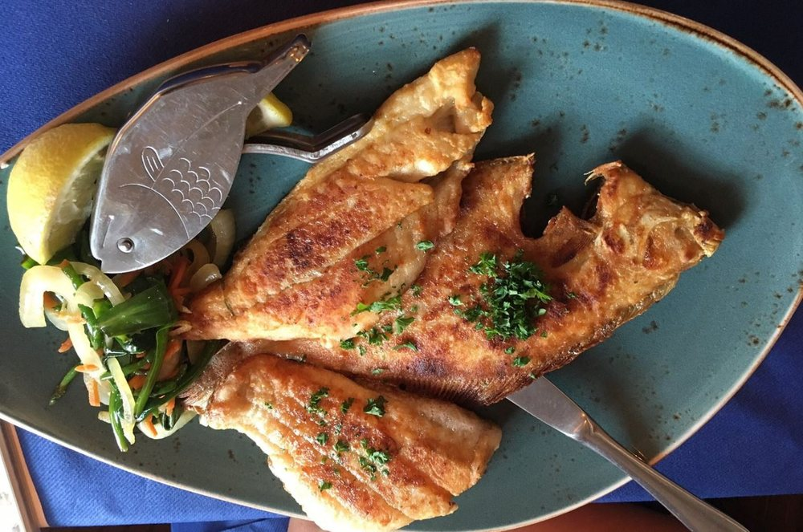
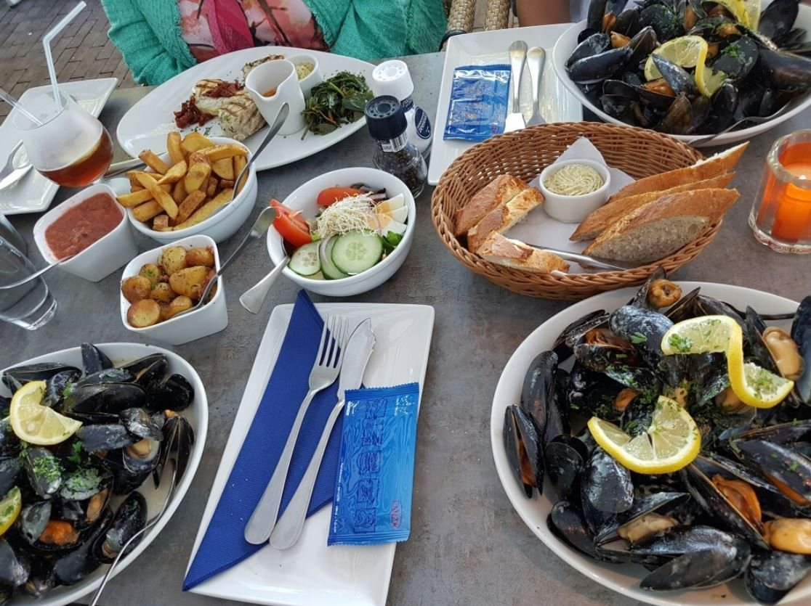
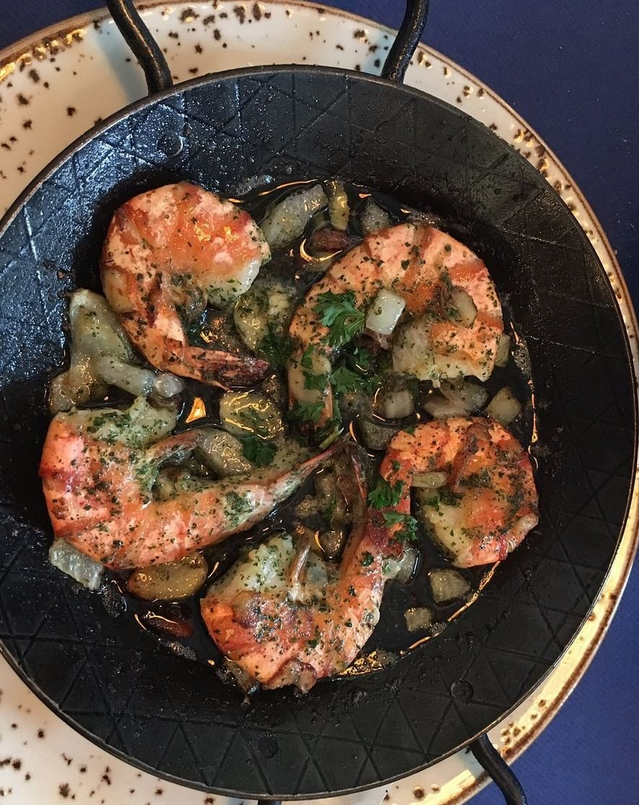
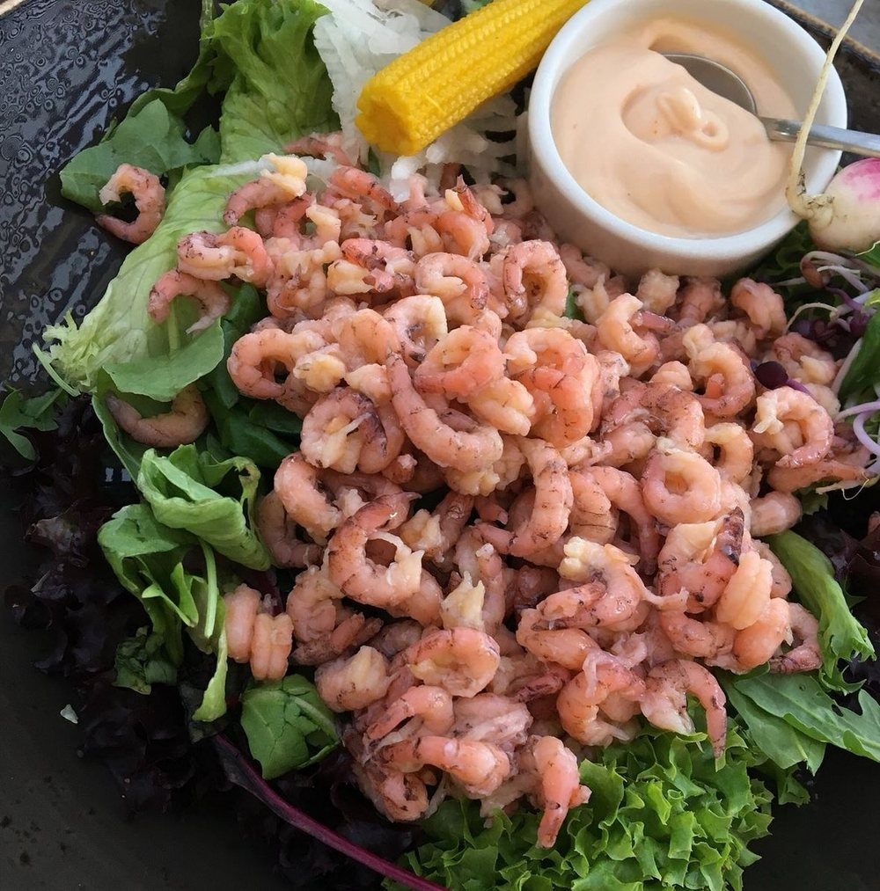
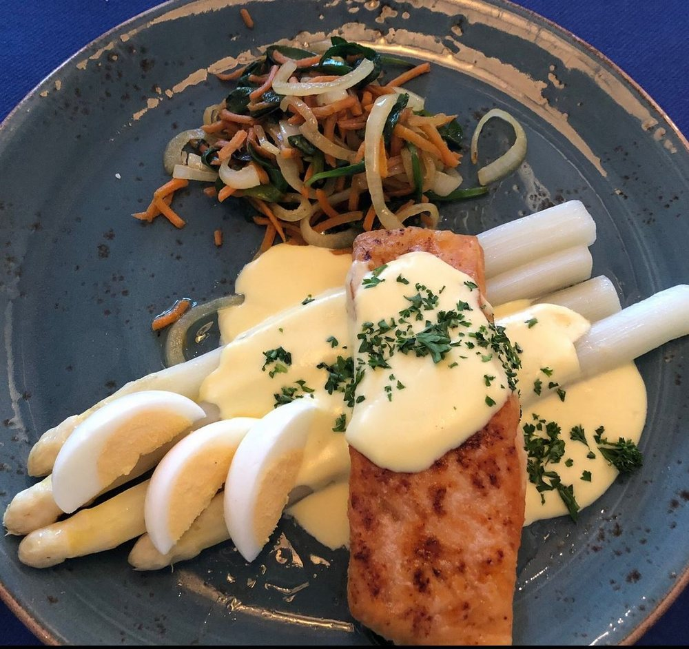
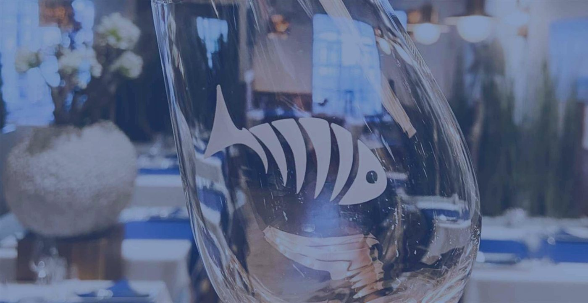

Zeetong
Gebakken in de pan, met citroen en groenten.

Visrestaurant in Westenschouwen, al sinds 2004. Puur, eerlijk en niet te ingewikkeld. Open vanaf 17.00 uur: binnen, in de verwarmde serre of op het terras.
Vis en schaaldieren zoals ze horen: vers, met aandacht bereid en zonder poespas.

Gebakken in de pan, met citroen en groenten.

Grote gamba's, zo uit de pan.

Ruim opgeschept op frisse sla, met cocktailsaus.

In het seizoen met witte asperges en ei.

Sinds 2004 is Het Vissershuis het domein van Anco Taal en zijn team. Het Vissershuis is bekend in Westenschouwen, en ook ver buiten de provincie.
Het eten moet goed zijn, maar het gaat ook om de kleine dingen eromheen: uw jas aannemen, de wijn inschenken, aandacht voor de gast. Of het nu een drukke of een rustige avond is.
"Iedereen is hier gelijk en even belangrijk."Anco Taal
Wil je ons gezellige en jonge team versterken? We zoeken mensen voor de bediening. Loop even binnen voor een gesprek met een drankje.
We reserveren voor binnen. In de verwarmde serre en op het terras kunt u zonder reservering aanschuiven.
Vul uw gegevens in, dan sturen we het door via WhatsApp. U krijgt altijd een bevestiging terug.
Reserveren kan alleen voor binnen. Voor de verwarmde serre (roken niet toegestaan) en het buitenterras kunt u niet reserveren: gewoon langskomen.
Honden zijn welkom. Meld het even bij uw reservering.